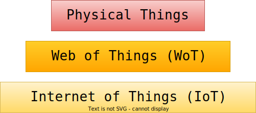
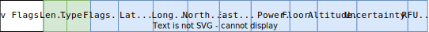
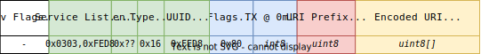
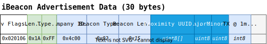
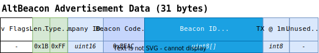
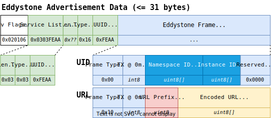

Overview
"A Physical Thing is an abstraction of a physical entity that provides interactions to and participates in the Web of Things"
- W3C Web of Things (WoT) Thing Description 1.1 
Problem Statement
"How to discover and track Physical Things indoors?"
BLE Specifications
 
BLE Specifications ...
 
BLE Specifications ...

Protocol
BLE 4.X

Protocol ...
BLE 5.X

Demonstrator
Example
@prefix : <http://sembeacon.org/example.ttl#> .
@prefix hardware: <http://w3id.org/devops-infra/hardware#> .
@prefix poso: <http://purl.org/poso/> .
@prefix posoc: <http://purl.org/poso/common/> .
@prefix sembeacon: <http://purl.org/sembeacon/> .
@prefix qudt: <http://qudt.org/schema/qudt/> .
@prefix unit: <http://qudt.org/vocab/unit/> .
:building_a a ssn:Deployment ;
rdfs:label "Building A" ;
sembeacon:namespaceId "e19c5e1ed6a14d..."^^xsd:hexBinary .
:room_a1_2 a sembeacon:SemBeacon ;
rdfs:label "SemBeacon Room A1.2"@en ;
rdfs:isDefinedBy <http://sembeacon.org/example.ttl#> ;
sembeacon:namespace :building_a ;
sembeacon:instanceId "beac0101"^^xsd:hexBinary ;
hardware:mac "00:11:22:33:44:55" ;
posoc:referenceRSSI [ # Reference RSSI is a ...
# ... factory calibrated signal strength
poso:hasRSS [
qudt:unit unit:DeciB_M ; qudt:numericValue -56 ] ;
# ... measured at a specific distance
poso:hasRelativeDistance [
unit:Meter ; qudt:value "1.0"^^xsd:double ] .
] ;
poso:hasPosition [ a poso:AbsolutePosition ;
poso:hasAccuracy [ ... ] ; poso:xAxisValue [ ... ] ;
poso:yAxisValue [ ... ] ; poso:zAxisValue [ ... ] ] .